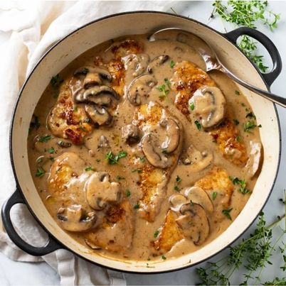

This mushroom chicken recipe has juicy chicken that's smothered in a thick and creamy mushroom sauce that encompasses the flavor and consistency of gravy.
Ingredients
- 10 oz. mushrooms, button or baby bella work well
- 2 Tablespoons salted butter
- 2 large boneless skinless chicken breasts
- Salt/Pepper
- ½ cup all-purpose flour
- 3-4 Tablespoons olive oil
Sauce
- 2 ½ cups beef broth
- 1 chicken bouillon cube or 1 tsp better than bouillon
- 1 teaspoon soy sauce, can sub Worcestershire sauce
- 1 teaspoon onion powder
- ½ teaspoon EACH: mustard powder, dried thyme
- ½ cup dry white wine, see notes
- 3 cloves garlic, minced
- 3 Tablespoons cornstarch
- 1/3 cup heavy cream
Preparation
- Prep Work
- Combine beef broth, chicken bouillon, soy sauce, onion powder, mustard powder, and thyme. Set aside.
- Combine cornstarch with 3 Tablespoons of cold water in a sealable container and shake to combine. Set aside in a cool place.
- rinse mushrooms and pat completely dry. Slice if needed.
- Slice the chicken lengthwise into 2-3 thinner slices. Pound with a meat tenderizer if needed, the chicken will plump up more when cooked. Aim for ½ inch thick slices.
- Cook the Mushrooms
- Melt butter over medium-high heat and add the mushrooms. Allow them to brown on each side for 3-4 minutes, undisturbed. Sauté in batches if needed, leaving space around them will allow them to crisp up more. Add a little more butter and/or a splash of olive oil during cooking if needed. Remove once golden brown and set aside on a plate.
- Dredge/Sear the Chicken
- Lightly sprinkle each side of the chicken with salt and pepper. Dredge in flour and tap off excess.
- Heat olive oil in a large pan over medium-high heat. Add 3 pieces of chicken, leaving room around each. Sauté for 4-5 minutes per side, until a golden brown crust has developed. Remove and set aside. Repeat with the remaining 3 pieces of chicken.
- Pro Tips: Make slight adjustments to the heat, (up or down), as needed during cooking. Add an additional splash of olive oil if needed throughout cooking. Try to leave the chicken undisturbed as it cooks to get a nice crusty sear.
- Deglaze the Pan
- Turn the heat off and remove any excess oil, but leave the brown bits in the pan. (This is called “fond” and will give the sauce plenty of flavor.)
- Add the white wine and the garlic and set heat to medium. Use a silicone spatula to “clean” the bottom of the pot. Let it bubble gently until reduced by half, about 4 minutes.
- Finish the Sauce
- Add the beef broth mixture and increase heat slightly to bring to a gentle boil. Let it bubble and reduce for 10 minutes.
- Shake the reserved cornstarch mixture and slowly add it to the bubbling sauce, stirring continuously, until incorporated. The sauce will thicken pretty quickly. Reduce heat to low.
- Slowly add in the cream, stirring continuously. Add the mushrooms.
- Add the chicken back to the pot along with any juices from the plate. Spoon the sauce on top. Cover partially and let the chicken heat through for 5 minutes or so. Serve with mashed potatoes or Buttered Noodles and roasted green beans or asparagus.